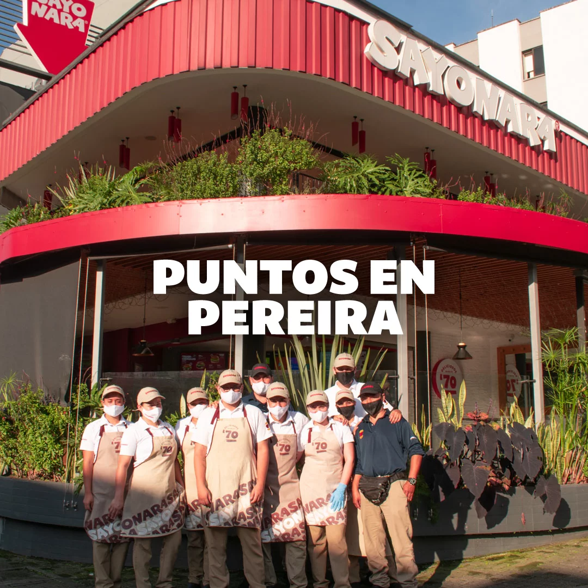

Sayonara Sushi est un restaurant japonais situé à Rabat, au Maroc. Depuis son ouverture, il s’est rapidement imposé comme l’un des meilleurs restaurants de sushi de la région grâce à sa cuisine authentique et fraîche. Le menu de Sayonara Sushi est varié et comprend une large sélection de sushis, sashimis, makis et autres spécialités japonaises. Les ingrédients utilisés sont de haute qualité et sélectionnés avec soin pour garantir une saveur exceptionnelle à chaque plat. Le restaurant propose également une variété de boissons, y compris du sake et des jus de fruit fraîchement pressés. Le personnel de Sayonara Sushi est accueillant...
